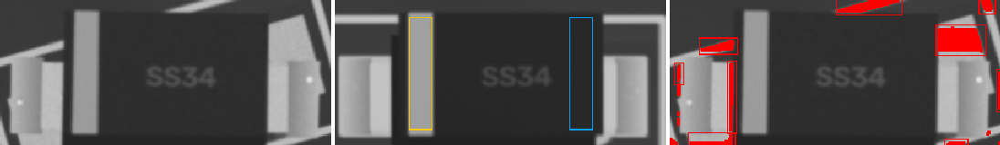
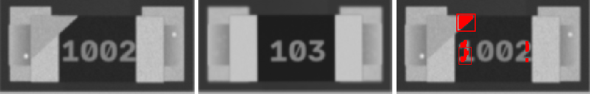
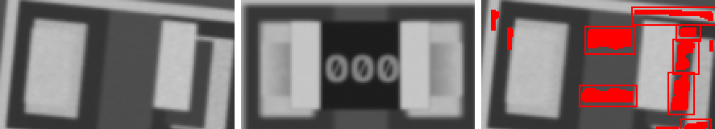
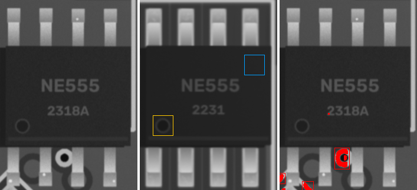
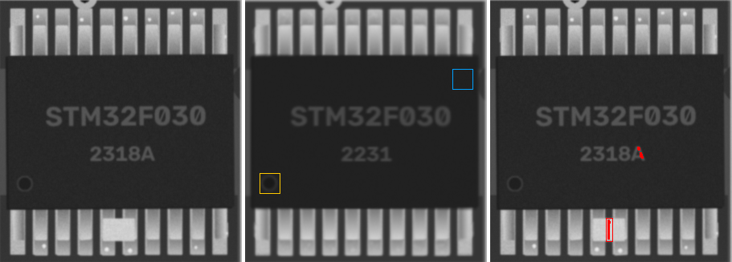

100n · 0603
MISMATCH

ncc 0.957 · ncc_thr 0.6 · mad 9.9 · mad_thr 8.0 · dx_mm 0.023 · dy_mm 0.0 · dtheta_deg -0.0 · anomaly_px 0
Tantalum_Case-A · Tantalum_Case-A
MISMATCH

ncc 0.984 · ncc_thr 0.6 · ncc_180 0.51 · mad 10.7 · mad_thr 7.4 · mad_180 28.2 · dx_mm 0.0 · dy_mm 0.0 · dtheta_deg -0.0 · anomaly_px 0
22p · 0805
MISMATCH

ncc 0.956 · ncc_thr 0.6 · mad 9.8 · mad_thr 7.9 · dx_mm 0.023 · dy_mm 0.023 · dtheta_deg -0.0 · anomaly_px 0
10u · 0603
MISMATCH

ncc 0.93 · ncc_thr 0.6 · mad 10.7 · mad_thr 7.9 · dx_mm -0.047 · dy_mm 0.023 · dtheta_deg -0.0 · anomaly_px 0
22p · 0805
MISMATCH

ncc 0.95 · ncc_thr 0.6 · mad 10.6 · mad_thr 7.8 · dx_mm 0.047 · dy_mm 0.023 · dtheta_deg -0.0 · anomaly_px 0
10u · 0402
MISMATCH

ncc 0.976 · ncc_thr 0.6 · mad 10.4 · mad_thr 9.2 · dx_mm 0.0 · dy_mm 0.0 · dtheta_deg -0.0 · anomaly_px 0
10u · 0603
MISMATCH

ncc 0.95 · ncc_thr 0.6 · mad 10.3 · mad_thr 8.3 · dx_mm 0.047 · dy_mm 0.0 · dtheta_deg -0.0 · anomaly_px 0
100n · 0402
MISMATCH

ncc 0.968 · ncc_thr 0.6 · mad 10.0 · mad_thr 8.7 · dx_mm -0.023 · dy_mm -0.023 · dtheta_deg -0.0 · anomaly_px 0
10n · 0805
MISMATCH

ncc 0.932 · ncc_thr 0.6 · mad 10.5 · mad_thr 7.8 · dx_mm -0.023 · dy_mm 0.023 · dtheta_deg -0.0 · anomaly_px 0
10u · 0603
MISMATCH

ncc 0.957 · ncc_thr 0.6 · mad 9.7 · mad_thr 7.6 · dx_mm 0.047 · dy_mm -0.047 · dtheta_deg -0.0 · anomaly_px 0
Tantalum_Case-A · Tantalum_Case-A
MISMATCH

ncc 0.954 · ncc_thr 0.6 · ncc_180 0.517 · mad 10.9 · mad_thr 7.4 · mad_180 32.4 · dx_mm 0.0 · dy_mm -0.023 · dtheta_deg -0.0 · anomaly_px 0
10u · 0402
MISMATCH

ncc 0.966 · ncc_thr 0.6 · mad 9.7 · mad_thr 9.1 · dx_mm -0.023 · dy_mm 0.0 · dtheta_deg -0.0 · anomaly_px 0
100n · 0805
MISMATCH

ncc 0.966 · ncc_thr 0.6 · mad 10.2 · mad_thr 7.8 · dx_mm 0.023 · dy_mm 0.023 · dtheta_deg -0.0 · anomaly_px 0
4u7 · 0805
MISMATCH

ncc 0.975 · ncc_thr 0.6 · mad 10.4 · mad_thr 7.5 · dx_mm 0.0 · dy_mm 0.0 · dtheta_deg -0.0 · anomaly_px 0
22p · 0402
MISMATCH

ncc 0.961 · ncc_thr 0.6 · mad 10.0 · mad_thr 9.3 · dx_mm 0.023 · dy_mm -0.023 · dtheta_deg -0.0 · anomaly_px 0
22p · 0402
MISMATCH

ncc 0.961 · ncc_thr 0.6 · mad 9.3 · mad_thr 9.0 · dx_mm -0.07 · dy_mm 0.0 · dtheta_deg -0.0 · anomaly_px 0
22p · 0805
MISMATCH

ncc 0.958 · ncc_thr 0.6 · mad 9.9 · mad_thr 7.9 · dx_mm 0.14 · dy_mm -0.047 · dtheta_deg -0.0 · anomaly_px 225
10u · 0603
MISMATCH

ncc 0.952 · ncc_thr 0.6 · mad 10.2 · mad_thr 7.9 · dx_mm -0.047 · dy_mm 0.0 · dtheta_deg -0.0 · anomaly_px 95
SMA · SMA
ROTATED ANOMALY

ncc 0.857 · ncc_thr 0.6 · ncc_180 0.759 · mad 6.2 · mad_thr 7.5 · mad_180 9.0 · mark_ncc 0.807 · mark_ncc_180 0.042 · dx_mm -0.023 · dy_mm 0.047 · dtheta_deg -16 · anomaly_px 2083
0R · 0603
MISMATCH

ncc 0.951 · ncc_thr 0.6 · mad 13.1 · mad_thr 10.5 · dx_mm 0.023 · dy_mm 0.0 · dtheta_deg -0.0 · anomaly_px 68
0R · 1206
MISMATCH

ncc 0.964 · ncc_thr 0.6 · mad 13.6 · mad_thr 8.7 · dx_mm 0.0 · dy_mm 0.0 · dtheta_deg -0.0 · anomaly_px 0
0R · 0805
MISMATCH

ncc 0.955 · ncc_thr 0.6 · mad 15.2 · mad_thr 10.3 · dx_mm -0.023 · dy_mm 0.023 · dtheta_deg -0.0 · anomaly_px 0
100k · 0603
MISMATCH

ncc 0.971 · ncc_thr 0.6 · mad 14.3 · mad_thr 8.9 · dx_mm 0.0 · dy_mm 0.0 · dtheta_deg 2 · anomaly_px 0
1k · 0805
MISMATCH

ncc 0.956 · ncc_thr 0.6 · mad 14.6 · mad_thr 12.2 · dx_mm 0.0 · dy_mm -0.023 · dtheta_deg -0.0 · anomaly_px 0
4k7 · 0603
MISMATCH

ncc 0.973 · ncc_thr 0.6 · mad 13.1 · mad_thr 10.2 · dx_mm 0.023 · dy_mm 0.0 · dtheta_deg -0.0 · anomaly_px 0
1k · 1206
MISMATCH

ncc 0.945 · ncc_thr 0.6 · mad 17.4 · mad_thr 8.6 · dx_mm -0.023 · dy_mm 0.0 · dtheta_deg -0.0 · anomaly_px 0
220 · 1206
MISMATCH

ncc 0.945 · ncc_thr 0.6 · mad 17.4 · mad_thr 9.3 · dx_mm -0.047 · dy_mm 0.0 · dtheta_deg -0.0 · anomaly_px 60
10k · 1206
MISMATCH

ncc 0.915 · ncc_thr 0.6 · mad 22.1 · mad_thr 9.1 · dx_mm 0.0 · dy_mm 0.0 · dtheta_deg -0.0 · anomaly_px 214
100k · 0805
MISMATCH

ncc 0.953 · ncc_thr 0.6 · mad 15.9 · mad_thr 10.5 · dx_mm 0.0 · dy_mm 0.023 · dtheta_deg -0.0 · anomaly_px 0
4k7 · 0603
MISMATCH

ncc 0.964 · ncc_thr 0.6 · mad 15.0 · mad_thr 10.1 · dx_mm 0.023 · dy_mm 0.023 · dtheta_deg -0.0 · anomaly_px 0
0R · 0805
MISMATCH

ncc 0.868 · ncc_thr 0.6 · mad 30.8 · mad_thr 9.2 · dx_mm -0.14 · dy_mm -0.093 · dtheta_deg 6 · anomaly_px 1221
220 · 0805
MISMATCH

ncc 0.95 · ncc_thr 0.6 · mad 16.4 · mad_thr 9.6 · dx_mm -0.047 · dy_mm -0.023 · dtheta_deg -0.0 · anomaly_px 0
0R · 0805
MISMATCH

ncc 0.954 · ncc_thr 0.6 · mad 14.8 · mad_thr 9.9 · dx_mm -0.047 · dy_mm 0.0 · dtheta_deg -0.0 · anomaly_px 0
NE555 · SOIC-8
SHIFT ANOMALY

ncc 0.912 · ncc_thr 0.6 · ncc_180 0.758 · mad 6.0 · mad_thr 7.2 · mad_180 7.9 · mark_ncc 0.841 · mark_ncc_180 0.153 · dx_mm 0.0 · dy_mm 2.581 · dtheta_deg -0.0 · anomaly_px 570
STM32F030 · TSSOP-20
ANOMALY

ncc 0.931 · ncc_thr 0.6 · ncc_180 0.737 · mad 6.9 · mad_thr 7.6 · mad_180 9.8 · mark_ncc 0.85 · mark_ncc_180 0.026 · dx_mm 0.0 · dy_mm 0.023 · dtheta_deg -0.0 · anomaly_px 78
NE555 · SOIC-8
MISMATCH

ncc 0.938 · ncc_thr 0.6 · ncc_180 0.547 · mad 7.5 · mad_thr 7.2 · mad_180 10.0 · dx_mm -0.023 · dy_mm 0.023 · dtheta_deg -0.0 · anomaly_px 0
47u · CP_Elec_5x5.8
ncc 0.994 · ncc_thr 0.6 · ncc_180 0.525 · mad 2.6 · mad_thr 7.7 · mad_180 28.4 · mark_ncc 0.985 · mark_ncc_180 -0.418 · dx_mm 0.0 · dy_mm 0.023 · dtheta_deg -0.0 · anomaly_px 0
47u · CP_Elec_5x5.8
ncc 0.992 · ncc_thr 0.6 · ncc_180 0.509 · mad 3.6 · mad_thr 7.9 · mad_180 29.8 · mark_ncc 0.983 · mark_ncc_180 -0.521 · dx_mm 0.07 · dy_mm 0.0 · dtheta_deg -0.0 · anomaly_px 0
SOD-123 · SOD-123
ncc 0.998 · ncc_thr 0.6 · ncc_180 0.846 · mad 5.1 · mad_thr 7.2 · mad_180 12.0 · mark_ncc 0.991 · mark_ncc_180 0.035 · dx_mm -0.047 · dy_mm -0.023 · dtheta_deg -0.0 · anomaly_px 0
LED_0805 · LED_0805
ncc 0.986 · ncc_thr 0.6 · ncc_180 0.851 · mad 5.1 · mad_thr 7.4 · mad_180 5.2 · mark_ncc 0.022 · mark_ncc_180 0.04 · dx_mm -0.023 · dy_mm 0.0 · dtheta_deg -0.0 · anomaly_px 0
SOD-123 · SOD-123
ncc 0.988 · ncc_thr 0.6 · ncc_180 0.831 · mad 6.3 · mad_thr 7.2 · mad_180 13.4 · mark_ncc 0.724 · mark_ncc_180 -0.012 · dx_mm -0.07 · dy_mm -0.023 · dtheta_deg -0.0 · anomaly_px 0
LED_0805 · LED_0805
ncc 0.983 · ncc_thr 0.6 · ncc_180 0.82 · mad 5.0 · mad_thr 7.6 · mad_180 5.1 · mark_ncc 0.026 · mark_ncc_180 -0.095 · dx_mm -0.023 · dy_mm -0.023 · dtheta_deg -0.0 · anomaly_px 0
J3Y · SOT-23
ncc 0.97 · ncc_thr 0.6 · ncc_180 0.561 · mad 7.4 · mad_thr 7.6 · mad_180 36.9 · dx_mm -0.023 · dy_mm 0.0 · dtheta_deg -0.0 · anomaly_px 0
0R · 0402
ncc 0.976 · ncc_thr 0.6 · mad 7.9 · mad_thr 10.2 · dx_mm -0.023 · dy_mm 0.047 · dtheta_deg -2 · anomaly_px 0
220 · 0402
ncc 0.987 · ncc_thr 0.6 · mad 7.8 · mad_thr 11.4 · dx_mm -0.023 · dy_mm 0.0 · dtheta_deg -0.0 · anomaly_px 0
10k · 0402
ncc 0.987 · ncc_thr 0.6 · mad 9.3 · mad_thr 9.6 · dx_mm -0.023 · dy_mm 0.0 · dtheta_deg -0.0 · anomaly_px 0
4k7 · 0402
ncc 0.994 · ncc_thr 0.6 · mad 7.6 · mad_thr 9.6 · dx_mm 0.0 · dy_mm 0.0 · dtheta_deg -0.0 · anomaly_px 0
RP2040 · LQFP-48
ncc 0.931 · ncc_thr 0.6 · ncc_180 0.717 · mad 5.8 · mad_thr 7.1 · mad_180 7.4 · mark_ncc 0.914 · mark_ncc_180 -0.0 · dx_mm -0.023 · dy_mm 0.023 · dtheta_deg -0.0 · anomaly_px 0
ESP32-C3 · QFN-32
ncc 0.931 · ncc_thr 0.6 · ncc_180 0.723 · mad 7.0 · mad_thr 7.3 · mad_180 9.8 · mark_ncc 0.921 · mark_ncc_180 0.071 · dx_mm -0.047 · dy_mm -0.047 · dtheta_deg -0.0 · anomaly_px 0
nRF52810 · QFN-32
ncc 0.946 · ncc_thr 0.6 · ncc_180 0.812 · mad 7.1 · mad_thr 7.2 · mad_180 10.2 · mark_ncc 0.877 · mark_ncc_180 0.3 · dx_mm -0.023 · dy_mm 0.023 · dtheta_deg -0.0 · anomaly_px 0